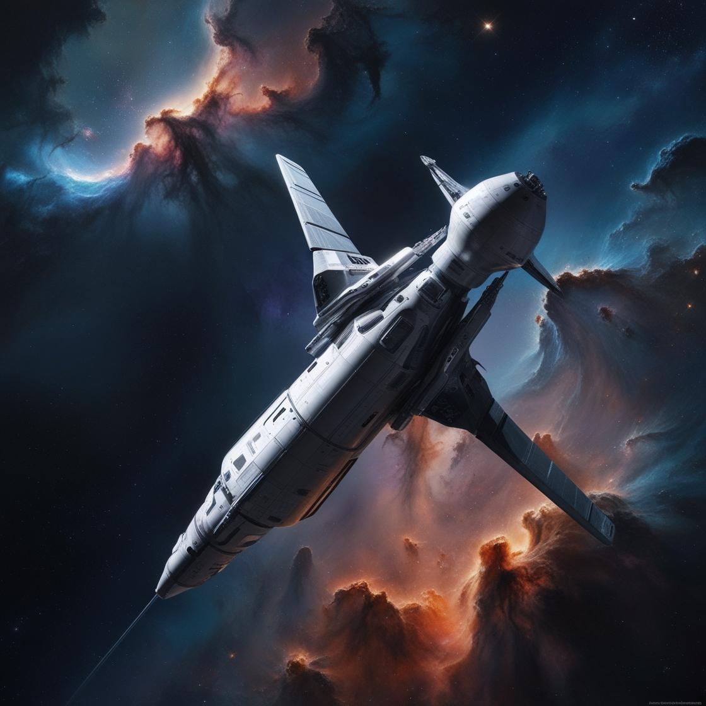

Act 2.1 - The First Lesson in Space
Part I
When I woke up from my coma, I saw the other half of the spaceship: all the small objects on the spacecraft were floating in the air like gods with superpowers.
I was anxious to open the porthole curtain to see where we were. But when I unbuckled my seat belt and wanted to move around in the cabin, I also floated up like the objects on the spaceship. Perhaps it was because I was too surprised that I didn't realize that I was already in outer space until now.
Just when I wanted to call PETE, I heard a "clang”, and I fell with all the objects on the spaceship and fell back into the seat on the spaceship.
"Sir, how is the vacuum environment?" A familiar voice sounded again, and as the cabin door opened, and Pete, also wearing a thick space suit, walked out of the control room.
"Sir, I just pumped out the oxygen in the spacecraft, and the pressure has changed. This is the environment we are in now - the real situation in outer space. You can take off your space suit now. I have to supply it with oxygen. There will not be enough oxygen when I need it later!"
When I took off the heavy space suit, he also pulled up the porthole curtains, and a feeling of freedom came with it: my body was no longer bound, and at the same time, I realized my long-cherished wish - to go into space.
As I gazed out of the porthole, I was struck speechless. The earth, our nurturing mother, loomed close, its continents and oceans clearly defined. Nearby, our faithful satellite, the moon, and the radiant sun, the source of light and warmth, were visible. These celestial bodies traversed the expansive universe, appearing as insignificant as grains of sand in an endless ocean or mere droplets in an infinite abyss. Each dutifully fulfilled its role, yet ultimately, they were but fleeting visitors in the grand history of the universe, destined to vanish into the eternal river of time.
Part II
"Sir, how is the world outside?"
When I was still immersed in the vast universe, PETE’s words suddenly brought me out of it. I shook my head, refreshed my spirit, and looked at him.
"How does it feel to be in space?"
"PETE, you know, going into space has always been my dream, not to mention being able to observe the movement of the universe and planets, this... this feeling is really... great!"
"Haha, sir, it seems that I have fulfilled one of your life wishes. Look how excited you are! Then I will test you. We are now in outer space. Can you guess what we will study next?"
PETE showed a happy expression on his face. He kept staring at me, as if he was expecting me to give the answer quickly.
Without even thinking, I answered directly: "Since we are here, we must observe the planets first. This is the closest research point to us."
"Sir, it seems that you are so excited about going to space that even your basic judgment is overshadowed!" PETE shook his head, "Think about it again. If we want to understand astronomy and study the origin, what should we start with?"
I took a deep breath, returned to a calm state of mind, thought for a long time, and whispered: "Could it be that we should understand the universe first? Should we study its origin first?"
"Yes, that's right. It seems that you have a strong ability to adjust. You can calm down and come up with the correct answer immediately. It's great!"
"Since you guessed it right, let me briefly introduce how we study the universe and its origin!"